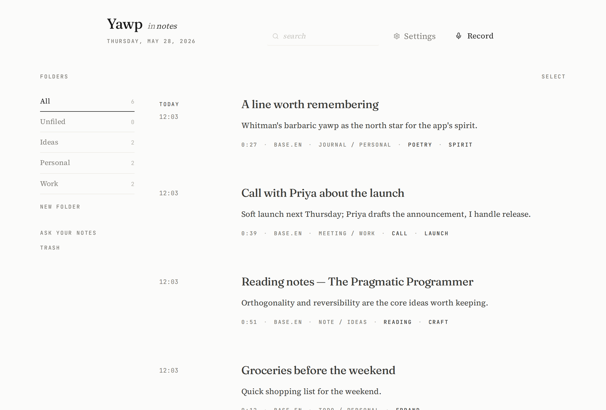
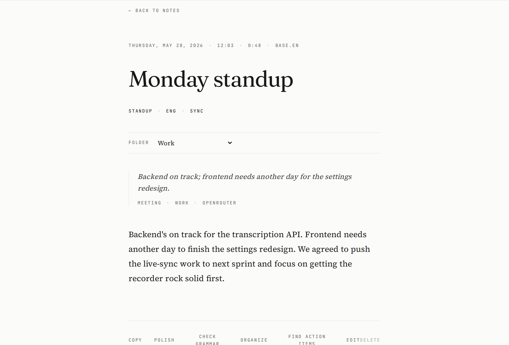
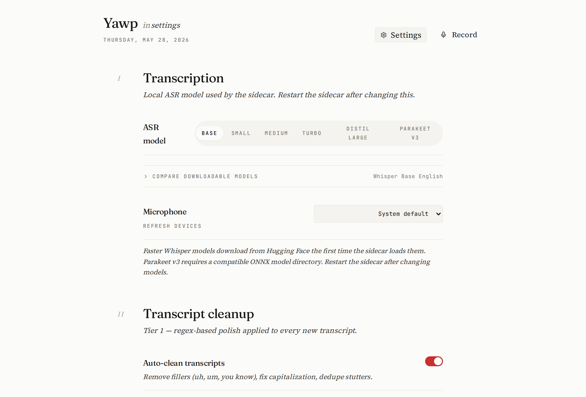
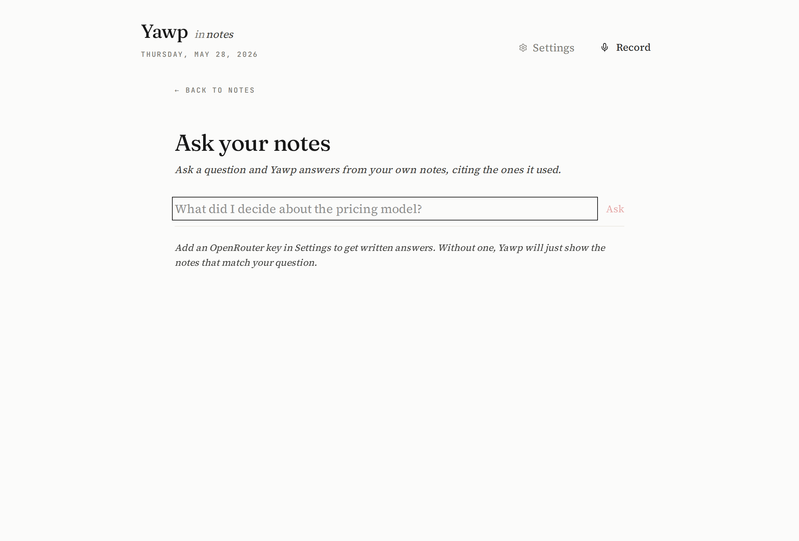

I sound my barbaric yawp over the roofs of the world. Walt Whitman · Song of Myself
Talk. It's text.
Press a hotkey, speak, and the words land wherever your cursor already is — terminal, editor, browser, chat. Every byte of audio stays on your machine.
Dictation that respects you
The Linux options were thin: cloud tools that ship your voice to a server, or a manual open-Whisper-and-paste dance. Yawp is the third way.
All local
Audio is transcribed on your machine by faster-whisper. No accounts, no cloud, no telemetry. Notes live in a SQLite file at ~/.voice.
Hotkey → text
No window to focus, no button to find. A global hotkey records; the transcript is typed straight into whatever app holds your cursor.
Works everywhere
Terminals, editors, browsers, chat — even SSH sessions — via xdotool / wtype. It feels native to the OS.
What you get
A real notes tool, not a transcription toy. Everything below ships today.
Two hotkeys
Ctrl+Alt+V types into the focused window. Ctrl+Alt+N saves a note in the library. Both also work as hold-to-talk.
A notes library
Full-text searchable (SQLite FTS5), editable, taggable, foldered, and exportable to Markdown for Obsidian, Bear, or iA Writer.
Ask your notes
Pose a question and get an answer grounded in your own notes, with the source notes cited. Retrieval is local; phrasing uses your model.
Polish & grammar
Three opt-in tiers: instant regex cleanup, a LanguageTool grammar pass, and a conservative OpenRouter copy-edit — each reviewable before it applies.
Smart organization
Notes earn summaries, a type, people, projects, and stronger tags. Confident ones can auto-file into folders — your manual moves are never overwritten.
Play it back
Every note keeps its audio. Replay it, or click any line of the transcript to hear that moment. Action items extract into a checklist.
Voice commands
Say “period”, “new paragraph”, “scratch that”, “all caps next”. Off by default; flip it on when you want hands-free punctuation.
Editorial UI
Serif typography, paper white, one quiet accent. Bulk-select, a real trash with restore, and a cache panel that shows exactly what's on disk.
A look inside
Editorial and calm — serif type on paper white, one quiet red. A tool you actually want to sit with, not another dashboard.




AI, optional and yours
Yawp works fully offline. The smart bits are an opt-in upgrade you control — bring your own key, pick a free model, and nothing leaves your machine unless you say so.
OpenRouter, your key
Drop in a free OpenRouter key and choose from a curated set of zero-cost models — or paste any model ID, free or paid. The key is stored only in ~/.voice and never echoed back.
Works without it
Every AI feature falls back to a local, rule-based path. No key, no network — Yawp still cleans, tags, and organizes. The model is an upgrade, never a dependency.
From edit to answer
Conservative copy-edit & polish, sharper auto-tags, one-line summaries, action-item extraction, confidence-gated auto-filing with your own categorization prompt, and ask-your-notes answers grounded in your library.
Install in one command
Linux today. You'll need Rust, Node 20+, and Python 3.11+ on your PATH — the script handles the rest (and uses uv when present).
# clone, then run the one-shot installer git clone https://github.com/bebhuvan/yawp.git cd yawp ./install.sh # it builds the app, sets up the venv, and writes # systemd user units so the sidecar + hotkey daemon # start on login. then just press Ctrl+Alt+V.
If a build step complains, install the system libraries:
sudo apt install libwebkit2gtk-4.1-dev build-essential libxdo-dev portaudio19-dev ffmpeg xdotool
(add wtype on Wayland).
Tagged releases also publish checksummed .deb / .AppImage bundles.
The bundle is the desktop app — the transcription sidecar still comes from install.sh
until the single-binary install lands (see the roadmap).
Where it's going
Yawp is young. Here's the shape of what's next — contributions welcome.
One-download install
Bundle the Python sidecar (PyInstaller, or as a Tauri sidecar) so a single downloaded binary just works — no toolchain, no build, no terminal.
Windows & macOS
Tauri already runs on both. The work is the keystroke-injection layer (today's xdotool/wtype is Linux-only) and packaging + autostart per OS.
A spoken productivity layer
To-do lists you dictate and check off, daily notes, spoken reminders, a command palette, and a calendar-style review of what you captured this week.
Real semantic search
Local embeddings + a vector index so “ask your notes” retrieves by meaning, not just keywords — entirely offline. Plus segment-accurate click-to-seek.
Thoughtful extras
Meeting mode with speaker hints, dictation snippets & templates, re-transcribe a note with a better model, an optional end-to-end-encrypted sync, and pluggable ASR backends with an in-app model manager.
Sturdier foundations
Split the monolithic settings & API layers into focused modules, add an integration test harness across the three processes, debounce + cancel in-flight requests, and a typed event bus between sidecar and app.
Written by Claude & OpenAI Codex.
Every line — the Rust shell, the Python sidecar, the React library, this page — was built by two AI coding assistants, Claude (Anthropic) and OpenAI Codex, working alongside their human collaborator. An experiment in how far a thoughtful tool can be carried by models that sweat the details. The barbaric yawp, it turns out, compiles.